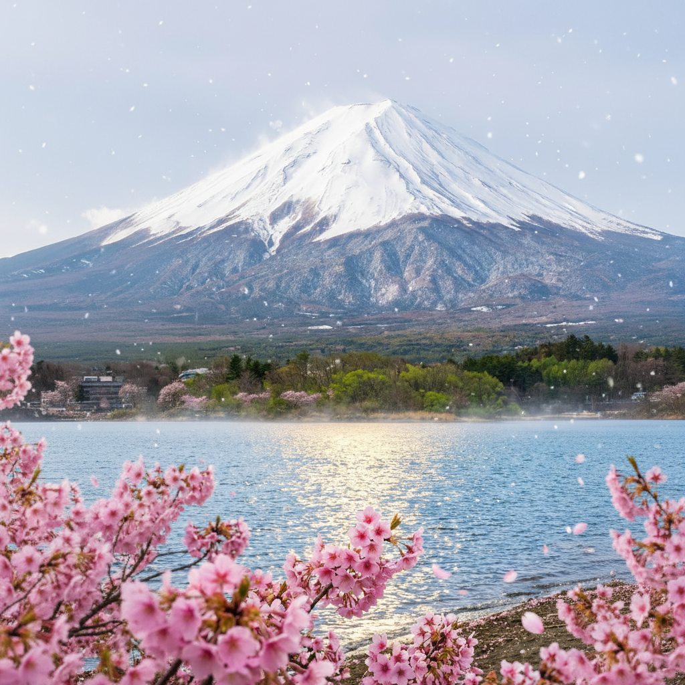
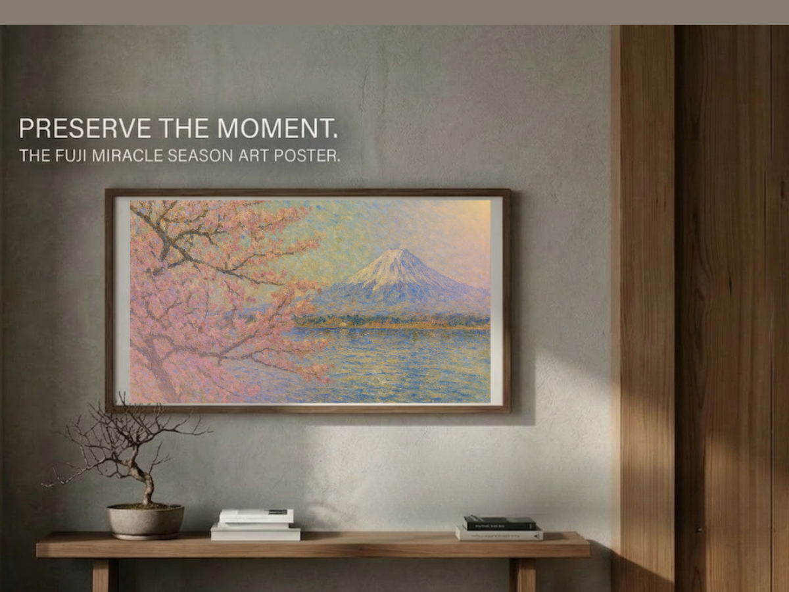

Cherry blossoms fall quickly.
Snow melts quietly.
The seasons change before we fully notice them.
In Japan this is not considered unfortunate.
It is considered beautiful.
Cherry blossoms fall quickly.
Snow melts quietly.
The seasons change before we fully notice them.
In Japan this is not considered unfortunate.
It is considered beautiful.

Around the world people admire things that endure.
Strong buildings. Ancient monuments. Endless landscapes.
In Japan people often admire something different.
Things that disappear.
There is a Japanese phrase called mono no aware.
It means an awareness that things are temporary.
And that this very impermanence makes them beautiful.
Cherry blossoms bloom for only a few days.
Because they disappear so quickly, people treasure them more deeply.

Perhaps beauty is not about how long something lasts.
Perhaps it is about noticing it before it disappears.
A falling petal. A changing sky. A season quietly turning.
When we notice these moments, we become part of them.